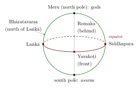

Chapter 14: Cosmic Time and the Shape of the Cosmos¶
14.1 Two Kinds of Cosmology¶
Indian astronomers worked with two pictures of the universe. One, inherited from the Purāṇas and shared in different forms by Hindu, Jain and Buddhist traditions, describes a flat earth of concentric continents and oceans around the world mountain Meru, with the heavens above and the underworlds below, existing through immense cycles of creation and dissolution. The other, that of the siddhāntas, describes a spherical earth at the centre of a spherical cosmos, with the Sun, Moon and planets moving on circles at measurable distances. The two pictures shared the cycles of time, which the siddhāntas used as the frame of their computations, but disagreed about space. How astronomers negotiated between them is one of the most interesting themes of the tradition (Minkowski 2004).
14.2 The Purāṇic Cycles of Time¶
14.2.1 The four ages¶
The Purāṇic scheme, already present in the Mahābhārata and in the Manusmṛti (1.68–73; the text is dated c. 2nd century CE), divides time into four ages (yugas) of declining virtue: Kṛta (or Satya), Tretā, Dvāpara and Kali. Their lengths are stated in “divine years”, each equal to 360 human years, and each age is preceded and followed by a “twilight” (sandhyā and sandhyāṃśa) of one-tenth of its length.
| Age | Core + twilights | Divine years | Human years |
|---|---|---|---|
| Kṛta | \(4000 + 400 + 400\) | 4800 | 1,728,000 |
| Tretā | \(3000 + 300 + 300\) | 3600 | 1,296,000 |
| Dvāpara | \(2000 + 200 + 200\) | 2400 | 864,000 |
| Kali | \(1000 + 100 + 100\) | 1200 | 432,000 |
| Mahāyuga (all four) | 12,000 | 4,320,000 |
14.2.2 Larger cycles¶
Seventy-one mahāyugas make a manvantara, the reign of a Manu. Fourteen manvantaras, with fifteen intervening twilights each as long as a Kṛta age, make a kalpa of 1000 mahāyugas, or 4,320 million years. A kalpa is a “day of Brahmā”, followed by a night of equal length in which the worlds are dissolved; 360 such days and nights make a year of Brahmā, and Brahmā lives a hundred such years, some 311 million million human years.
The tradition also locates the present. We are said to be in the fifty-first year of the present Brahmā, in the kalpa called Śvetavarāha, in the seventh manvantara (that of Manu Vaivasvata), in the twenty-eighth mahāyuga, in its Kali age, which began in 3102 BCE. On this reckoning, used in traditional almanacs and in the formulae recited before rituals, nearly 1,973 million years of the present kalpa have elapsed. The Sūryasiddhānta, which allows a period for creation at the beginning of the kalpa, counts somewhat differently (Burgess 1860).
14.2.3 The cycles in astronomy¶
The siddhāntas adopted these cycles for a practical reason (Chapter 6): stating the number of revolutions of every planet in a mahāyuga or a kalpa makes every mean motion a ratio of integers, and if all the mean planets are assumed to be together at the beginning of the cycle, any mean position can be computed from the number of days elapsed. Brahmagupta’s system, following the Purāṇic scheme, assumes a conjunction of all the mean planets, their apogees and nodes at the beginning of the kalpa. Āryabhaṭa took a different course. He made the four ages equal (1,080,000 years each) and the kalpa 1008 mahāyugas (14 manvantaras of 72 mahāyugas each), so that his mean planets were in conjunction at the beginning of every quarter-yuga, including the beginning of the Kali age. Brahmagupta condemned this departure from tradition at length.
14.2.4 Jain and Buddhist cycles¶
The Jain and Buddhist traditions have their own cycles of cosmic time, equally vast but differently organised. In Jain cosmology the “wheel of time” (kālacakra) turns through two half-cycles, an ascending one (utsarpiṇī) in which conditions improve and a descending one (avasarpiṇī) in which they decline, each divided into six “spokes” (aras) of unequal length; the twenty-four Tīrthaṅkaras of our world appear in the third and fourth spokes of each half-cycle, and we live in the fifth spoke of a descending half. The units of this scheme are counted in innumerable years (palyopama, sāgaropama) defined by thought-experiments rather than by multiplication. Buddhist texts describe a great aeon (mahākalpa) of four “incalculable” aeons, through which a world system forms, endures, is destroyed and remains empty. These schemes share with the Purāṇic one the ideas of immense duration, recurrence and moral decline, but unlike it they were never tied to astronomical computation.
14.2.5 The number 432,000¶
The Kali age of 432,000 years recalls the 432,000 years that the Babylonian priest Berossus (early third century BCE) assigned to the kings who ruled before the Flood. Whether the Indian numbers have a Mesopotamian origin, as some historians have suggested, or arose from the internal arithmetic of the Indian scheme (432,000 is \(1200 \times 360\)), is not settled (Pingree 1981).
14.2.6 Modern comparisons¶
The kalpa of 4.32 billion years is of the same order of magnitude as the modern age of the earth and solar system (about 4.57 billion years), and this is often presented as a remarkable anticipation. It is a coincidence. The Purāṇic numbers were obtained by multiplying a schematic age of 1200 divine years by successive factors (360, 10, 1000); they were not derived from any evidence about the age of the earth, and the larger figures of the same scheme (the life of Brahmā, some \(3 \times 10^{14}\) years) bear no relation to any modern quantity. The Purāṇic cycles express religious and cosmological ideas of immense duration, recurrence and decline, and their importance lies there.
14.3 The Purāṇic Earth¶
In the Purāṇic cosmography the earth (bhūloka) is a vast flat disc. At its centre is the continent Jambudvīpa, in the middle of which rises Mount Meru. Around Jambudvīpa lie six further ring-shaped continents (dvīpas), separated by seven oceans of salt water, sugar-cane juice, wine, clarified butter, curds, milk and fresh water. India (Bhāratavarṣa) is the southern part of Jambudvīpa. Above the earth are the spheres of the Sun, Moon, nakṣatras and planets, and higher heavens; below it are the netherworlds. Day and night are produced by the Sun’s circling Meru. Jain and Buddhist cosmologies share the general structure with different details; the Jain version, with two suns and two moons, was described in Chapter 3.
In this cosmography the distances are enormous and schematic (the continents and oceans double in size outward), and the Moon is farther than the Sun. It explains religious geography and the moral order of the worlds; it was not designed to predict celestial phenomena. Purāṇic and Jain cosmography, and the siddhāntas’ geography of the spherical earth, are treated more fully in Volume 21, Bhūgola.
14.4 The Spherical Cosmos of the Siddhāntas¶
The siddhāntas, by contrast, place a spherical earth, suspended without support, at the centre of the universe. Around it revolve, at increasing distances, the Moon, Mercury, Venus, the Sun, Mars, Jupiter, Saturn and the stars. The whole is enclosed in the cosmic egg (brahmāṇḍa), whose size the Sūryasiddhānta computes from its principle of equal linear velocities (Chapter 7).
The siddhāntas kept some Purāṇic names by giving them new places on the sphere. Meru became the north pole of the earth, where the gods live and see the Sun continuously for six months, so that their “day” is half a human year; the asuras live at the south pole. Laṅkā became a point on the equator on the prime meridian, and three other cities (Yavakoṭi, Romaka and Siddhapura) were placed on the equator at intervals of \(90^\circ\), so that when the Sun rises at one it is noon, sunset and midnight at the others (Burgess 1860).

The siddhānta writers drew out the consequences of the spherical earth with evident pleasure. At Meru, on the pole, the Sun is visible continuously for the six months in which it is north of the equator and invisible for the other six, so that the gods’ day and night each last half a year; at the south pole the reverse holds for the asuras. At Laṅkā, on the equator, day and night are always equal. Between them, the length of the day depends on latitude and season, as the rules of the ascensional difference describe (Chapter 6). The “day of the gods” of Purāṇic chronology, a human year, was thus given an astronomical meaning.
This re-use of Purāṇic names made the new cosmography easier to accept, and it allowed the astronomers to claim that their sphere was consistent with tradition.
14.5 Conflict and Accommodation¶
The two cosmologies could not both be literally true, and astronomers said so. Lalla, in the eighth century, devoted a chapter to refuting “false knowledge” (mithyājñāna): that the earth is flat or supported, that the Moon is beyond the Sun, that night is caused by Meru, and that Rāhu swallows the Sun and Moon. Bhāskara II, in the Golādhyāya, argued against the support of the earth and discussed how the Purāṇic statements could be understood. Some astronomers took the view that the Purāṇas describe things that astronomy does not (and need not) explain, or that they are true in a different sense; others proposed that the Purāṇic descriptions were meant for a different purpose.
The debate continued in the early modern period. Jñānarāja’s Siddhāntasundara (1503) gave long chapters to reconciling the Purāṇic earth with the sphere (Knudsen 2014), and Kamalākara and Munīśvara in seventeenth-century Vārāṇasī disagreed about how far the astronomer may depart from scripture, and later scholars wrote treatises reconciling the two pictures. In the nineteenth century, when European astronomy was taught in Indian schools, the same questions were asked again about the relation between the heliocentric system and the siddhāntas (Minkowski 2004, 2002). In these debates Indian astronomers reflected explicitly on the nature and authority of their own knowledge.
14.6 Time in Indian Philosophy¶
The philosophical schools also discussed the nature of time (kāla): whether it is a substance (as the Vaiśeṣikas held) or a construction from the succession of events, whether it is continuous or made of discrete instants (the Buddhist doctrine of momentariness), and how it relates to causality. These discussions, treated in Volume 3, were largely independent of the astronomers’ practical time-reckoning, although both shared the vocabulary of units and cycles.
Further Reading¶
Minkowski (2004) studies the debates between Purāṇic and siddhāntic cosmology; Burgess (1860) translates the cosmographical chapter of the Sūryasiddhānta; Pingree (1981) discusses the cycles.